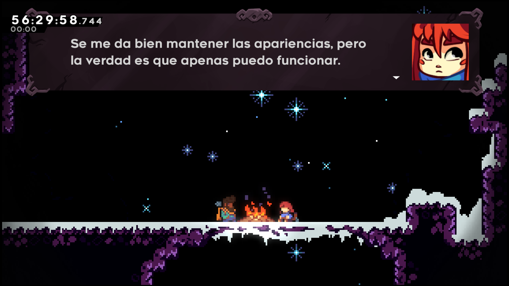

Perdonarse también es subir
Celeste no es un videojuego que trate solo de escalar una montaña. Trata de lo que pasa por el camino cuando te caes por décima, por centésima vez, y aun así decides levantarte. Madeline sube una montaña, pero la verdadera escalada ocurre dentro de ella.
Casi todo el viaje la persigue una sombra, esa voz que le dice que no puede, que no alcanza, que mejor se rinda. Madeline intenta huir de ella, esconderla, dejarla atrás. Y la montaña le responde en silencio que no alcanzará la cima mientras estés en guerra contigo misma. Solo cuando la escucha y deja de tratarla como enemiga, las dos pueden subir juntas.
Imágenes del juego
El duelo de quien fuiste
Crecer también es hacer duelo. Duele despedirse de la persona que pensabas que ibas a ser, del tiempo que sientes perdido, de las versiones de ti que ya no caben en tu vida.
El duelo no es una línea recta. Hay días en que parece que ya subiste y, de pronto, el viento te devuelve al inicio del capítulo. Pero cada intento en el que fracasas deja algo, un salto mejor medido, una respiración más calma. Volver a empezar no es retroceder, es la forma en que se aprende una montaña.

Ficha del juego
| Característica | Dato |
|---|---|
| Desarrolladores | Maddy Makes Games (Maddy Thorson y Noel Berry) |
| Música | Lena Raine |
| Lanzamiento | 25 de enero de 2018 (PC, Switch y PS4; Xbox One un día después) |
| Género | Plataformas 2D de precisión |
| Modo de juego | Un jugador, con Modo Asistencia opcional |
| Origen | Un prototipo hecho para PICO-8 en una game jam |
| Fecha | Qué pasó |
|---|---|
| Agosto de 2015 | Nace el primer Celeste, en pocos días, durante una game jam |
| 25 de enero de 2018 | Lanzamiento del juego completo |
| Diciembre de 2018 | Gana Mejor Juego Independiente y Games for Impact en The Game Awards |
| Fines de diciembre de 2018 | Supera las 500.000 copias vendidas |
| 2019 | Llega Farewell, el capítulo 9 gratuito |
Los capítulos de la montaña
| Capítulo | Lo que me dejó |
|---|---|
| 1. Ciudad Olvidad | El primer paso no tiene que ser perfecto. |
| 2. Ruinas | Huir de lo que te asusta cansa más que mirarlo de frente. |
| 3. Celestial Resort | El agobio también necesita que alguien lo escuche. |
| 4. Risco Dorado | Respirar con alguien al lado hace que el miedo pese menos. |
| 5. Templo del Espejo | Cuando todo se rompe, toca mirarse al espejo. |
| 6. Reflexión | Dejar de pelear contigo es el verdadero cambio. |
| 7. La Cumbre | En la cima no subes sol@. Sube tambien la parte tuya que tenía miedo |
| 8. Núcleo | Después de la cima, aún queda mucho por descubrir. |
| 9. Despedida | Despedirse con cariño también es una forma de sanar. |
Lo que me llevo de Celeste
- Caer no es fracasar: el juego te devuelve a intentarlo en un segundo y celebra que sigas aquí.
- No hay que huir de las sombras: Esa parte tuya pesa menos cuando deja de ser enemiga y se vuelve compañera.
- Pedir ayuda no es rendirse: Nadie sube solo.
- Pararse a respirar tambien es un avance: Imagina una pluma que suba y baje, calma tus crisis.